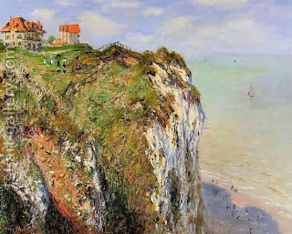

Yoma 66 - How to send a goat away
The High Priest would then go to the goat sent to Azazel, lean on it with both his hands, and say another confession, similar to the one above "Please, God, forgive your nation…"
He handed the Azazel goat to the person appointed to lead it to the cliff. Anyone could lead it, but the custom was that only a Kohen did it. They have built a ramp that led from the Temple Courtyard to outside the city of Jerusalem, for leading the goat. It was constructed because of the Babylonians who would pull his hair and say to him, "Take our sins and go!"
They asked Rabbi Eliezer, "If the goat became sick, can the Kohen carry him" (given the prohibition to carry on Yom Kippur)? He answered, "The goat can carry you and me together!" They asked him, "If the Kohen shoved the goat off the cliff but it did not die, should he descend and kill it?" He answered, "May all the enemies of God perish!" The Talmud gives more evasive replies by Rabbi Eliezer but comments that he simply did not want to reply when he did not have definite knowledge of the matter. However, the Sages give a positive answer to both questions.
Art: The Cliff At Dieppe by Claude Oscar Monet